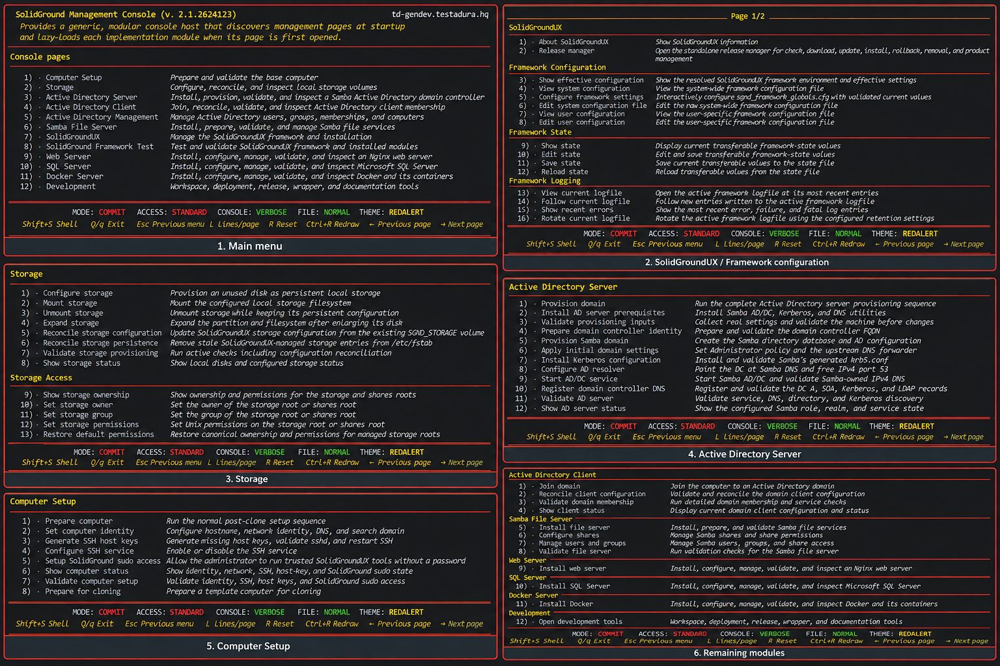

SolidGroundUX began with a practical goal:
As the framework matured, the management functionality built on top of it grew into something substantial in its own right. As of version 2.1 of the framework, that functionality became a separate product: SolidGroundUX Management Console Modules. The separation is architectural rather than merely organizational. SolidGroundUX provides the runtime, conventions, APIs, console infrastructure and reusable framework services. The Management Console Modules are designed to run through the framework executable sgnd-console. They began as a way to showcase the SolidGroundUX Management Console....
The Management Console Modules have evolved into a collection of shell scripts covering a broad range of practical server-management tasks. They have been tested extensively on Ubuntu 24.04 LTS and 25.04.
In practice they have demonstrated that configuring a Samba AD domain controller, a Samba file server, a SQL Server host and an Nginx web server can be reduced from hours of repetitive configuration to a largely guided and repeatable process.
During end-to-end testing, configuring a Samba AD domain controller, Samba file server, SQL Server host and Nginx web server took little over half an hour, including basic user and share configuration.